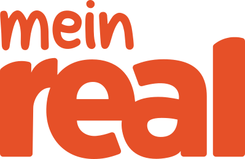

대표 로고대표 브랜드 마크
대표 로고대표 브랜드 마크마인 레알 Mein Real
마인 레알(Mein Real)은 독일의 하이퍼마켓 체인이다.
최종 업데이트
마인 레알은 어떤 브랜드인가
마인 레알(Mein Real, 옛 Real)은 독일의 대형 하이퍼마켓(SB-Warenhaus) 체인이다. 1992년 메트로 그룹 산하 아스코(Asko)가 divi·Basar·Continent·Esbella·real-kauf 등 5개 점포망을 통합해 출범했고, 한때 독일 전역 270여 개 매장과 3만4천여 명을 고용한 식품 종합소매 강자였다.
두 차례 전환점이 운명을 갈랐다. 2020년 메트로가 룩셈부르크 SCP 그룹에 매각했고, 새 주인은 곧 사업을 분할·매각해 다수 점포를 에데카·카우프란트·글로부스·레베 브랜드로 전환시켰다.
잔존법인은 2023년 9월 파산을 신청하고 2024년 3월 마지막 45개 매장을 닫으며 사실상 소멸했다. 국가는 독일.
마인 레알은 어떻게 봐야 할까
마인 레알의 소멸은 한 기업의 실패라기보다 독일식 대형 하이퍼마켓 포맷 자체의 구조적 쇠퇴를 압축해 보여준다. 알디·리들로 대표되는 강력한 디스카운터가 가격을, 온라인이 비식품 구색을 잠식하면서, 식품부터 가전·의류·서적까지 한 지붕 아래 모은 1만㎡급 대형점은 임대료·인건비 부담만 큰 애매한 포맷으로 전락했다.
차별점은 매각 구조에 있다. 모회사 메트로는 이 부진 사업을 통째로 재무적 투자자(SCP)에 넘겨 분리했고, 투자자는 운영 정상화 대신 점포를 경쟁사들에 쪼개 파는 청산형 출구를 택했다.
즉 브랜드 가치가 아니라 부동산·점포 입지가 자산으로 거래된 사례다. 한국 독자에게는 이마트·홈플러스 같은 대형마트가 직면한 디스카운터·이커머스 양면 압박, 그리고 사모펀드 인수 이후의 분할매각·점포 처분 시나리오를 미리 보여주는 거울로 읽힌다.
마인 레알은 어떻게 시작되고 성장했나
1990년대 독일 소매는 분산된 지역 하이퍼마켓들이 난립하던 시기였다. 1992년 메트로 그룹 계열 아스코가 divi·Basar·Continent·Esbella·real-kauf 다섯 체인을 하나로 묶어 통일 브랜드 레알을 만들었고, 같은 해 메트로가 아스코 지분을 확보하며 그룹 핵심 식품소매 축으로 편입했다.
2000년대 들어 레알은 월마트 독일 점포 인수 등으로 외형을 키웠고, 2008년부터 '한 번 가면 다 있다'(Einmal hin. Alles drin.)는 슬로건으로 원스톱 대형점 이미지를 굳혔다.
첫 번째 전환점은 2018년 메트로가 레알 분리·매각 방침을 공식화한 것이고, 두 번째는 2020년 2월 합의·6월 완료된 SCP 그룹 매각이다(약 10억 유로 가치, 메트로 순현금 유입 약 3억 유로 규모). 이후 2021년 4월 청산 절차가 시작돼 270여 점포가 경쟁사로 넘어갔고, 2022년 7월 잔존 점포가 '마인 레알'로 재브랜딩됐다.
마인 레알의 브랜드 아이덴티티는 무엇인가
레알의 핵심 가치는 '한 곳에서 모든 것'을 해결하는 원스톱 대량구매였다. 비주얼 아이덴티티는 오랫동안 이탤릭 서체와 가격을 상징하는 부호, 파란색을 썼고, 2017년 짙은 청색 기조로 현대화한 뒤 재브랜딩 국면에서 붉은색 'mein Real' 소문자 로고로 바뀌었다.
보이스 역시 변했다. 대형점 전성기에는 압도적 구색을 자랑하는 '한 번 가면 다 있다'였으나, 마인 레알 단계에서는 '내가 좋아하는 모든 것'(alles was ich mag!)으로 지역밀착·개인화를 강조하는 친근한 톤으로 전환했다.
타깃은 가족 단위 대량 장보기 소비자와 가전·생활용품까지 한꺼번에 사려는 실용형 구매층이었다.
마인 레알의 대표 제품과 서비스는 무엇인가
취급 품목은 식품·신선식품에 더해 생활용품, 가전·전자, 서적·미디어, 의류·신발까지 아우르는 종합 구색이었다. 자체 브랜드로 저가형 TiP, 중급 real Quality, 프리미엄 realSelection, 유기농 real Bio, 가전 Watson 등을 운영했다.
포맷은 매장면적 5천~1만5천㎡대의 셀프서비스 대형점(SB-Warenhaus)이며, 채널은 오프라인 점포에 더해 한때 온라인 마켓플레이스 real.de를 함께 운영하는 옴니채널 구조였다.
마인 레알은 지금 어떤 상태인가
레알 브랜드는 사실상 소멸했다. 2021년 이후 270여 점포가 에데카·카우프란트·글로부스·레베·V-마르크트 등 경쟁사로 넘어가 각사 브랜드로 전환됐고, 인수자를 찾지 못한 점포는 폐점됐다.
2022년 잔존 점포가 마인 레알로 재출범했으나 2023년 9월 자기관리형 파산을 신청했고, 18개 매장이 레베·카우프란트·에데카로 추가 이관된 뒤 나머지 약 45개 매장이 2024년 3월 말 폐점하며 영업과 법인이 종료됐다. 운영 국가는 독일에 한정됐고, 별도의 해외 승계 법인은 미공개.
현재 상태는 대부분 청산 완료다.
마인 레알 로고는 어떻게 변해왔나
대표 로고대표 브랜드 마크
대표 로고 1보관 이미지 1자주 묻는 질문
마인 레알의 브랜드 아이덴티티는 무엇인가요?
레알의 핵심 가치는 '한 곳에서 모든 것'을 해결하는 원스톱 대량구매였다.
마인 레알의 대표 제품은 무엇인가요?
취급 품목은 식품·신선식품에 더해 생활용품, 가전·전자, 서적·미디어, 의류·신발까지 아우르는 종합 구색이었다.
마인 레알는 현재 어떤 상태인가요?
레알 브랜드는 사실상 소멸했다.
마인 레알의 공식 웹사이트는 어디인가요?
마인 레알의 공식 웹사이트는 https://www.meinreal.de/ 입니다.
출처와 검증
마인 레알 관련 참고: 공식 웹사이트. 브랜드명은 한글과 원어를 함께 표기하되 데이터에 없는 표기는 만들지 않습니다. 기원 국가·설립연도는 검수된 정의문에서 확인된 값을 우선하고, 없을 때만 공식 웹사이트 URL이 일치하는 위키데이터 개체의 값을 씁니다.